January 2017
| Each January, Northwest Baptist Church puts on
a big conference for missionary-minded folk and for internationals who are
seeking to know more about Jesus. This year I accompanied other
volunteers from the BCM (Baptist Collegiate Ministries) and these seekers
on a tour of Oklahoma City that was part of this conference. It was
bitterly cold that day, one of the few really nasty days we had this
winter, but we were not daunted! We toured the city, then served at
the Food Bank in the afternoon. It was great. |
|
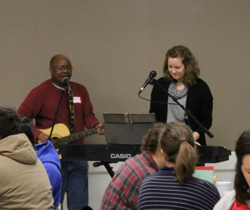 |
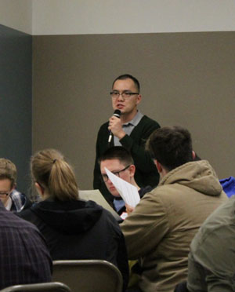 |
| The conference started with worship from our friends Sam and Chelsey. | Our friend Edison served as emcee of the event. |
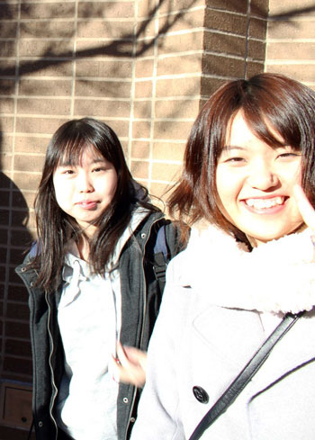 |
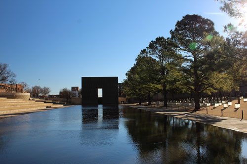 |
| Here we are, ready to tour the OKC Bombing Memorial. | The memorial grounds |
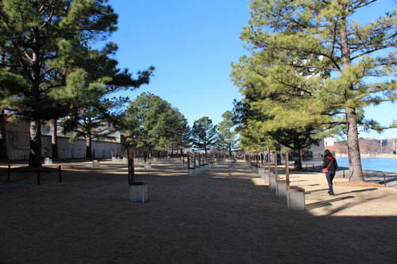 |
|
| The empty chairs | Japanese friend Masa |
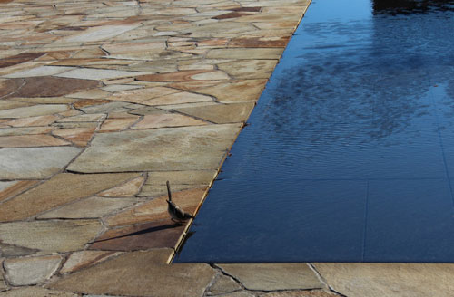 |
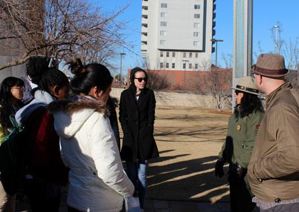 |
| Pretty bird drinking at the memorial | Getting a history of the bombing and the memorial from the ranger |
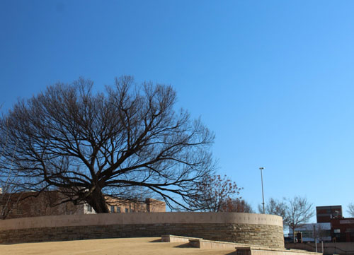 |
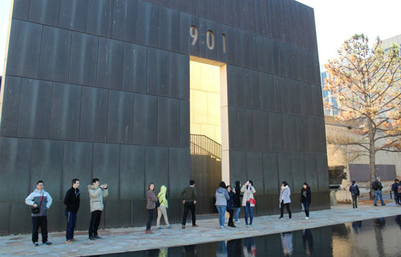 |
| The survivor tree |
Students looking around near the "before" gate |
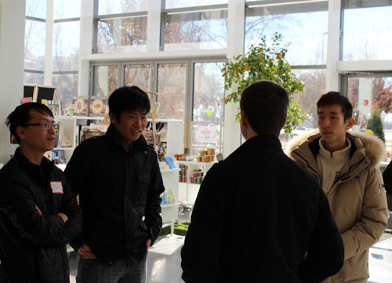 |
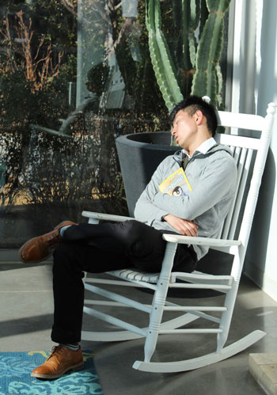 |
| Next was the botanical gardens, where we made quick forays into the cold,
then back into the gift shop to thaw out. |
Although some students decided to just nap in the sun. Looks nice! |
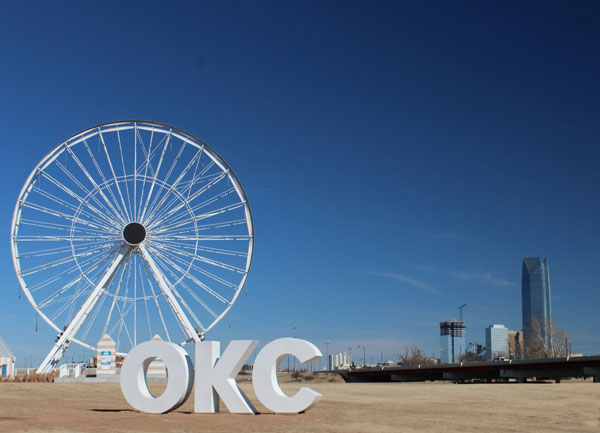 |
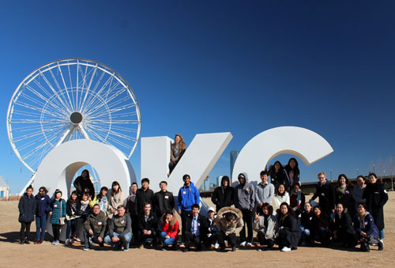 |
| Next we stopped at the Wheeler Ferris Wheel for some great photo ops | Group photo |
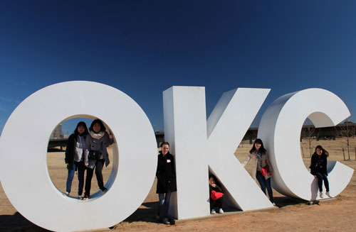 Fun with the giant OKC letters |
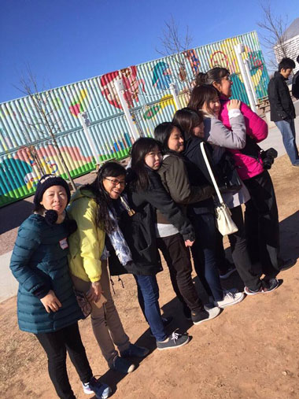 |
| My friend Miki got behind me to stay warm (using me for a wind block) and it caught on. |
|
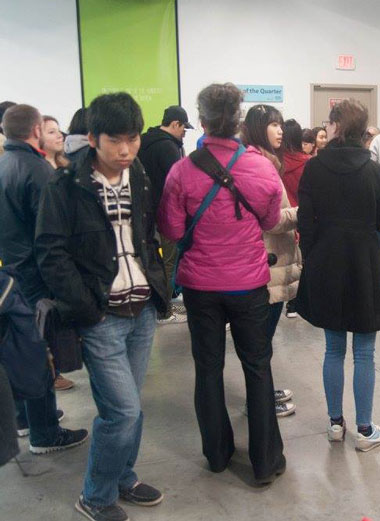 |
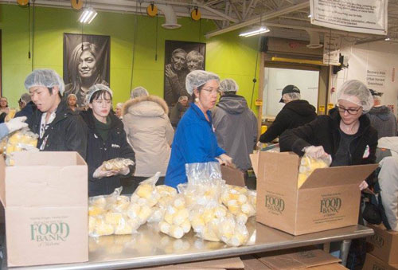 |
| Here we are at the Food Bank. Thanks goes to my friend Richard for the photos. |
We bagged frozen corn that day, and did a fine job of it too! |
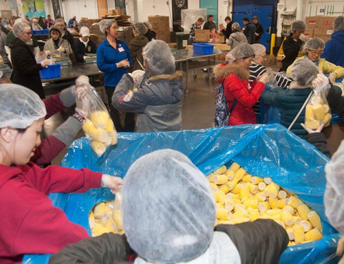 |
|
| Pay no attention to the fact that I was just standing there rocking my hair
net while everyone else was working. I was supervising! |
|